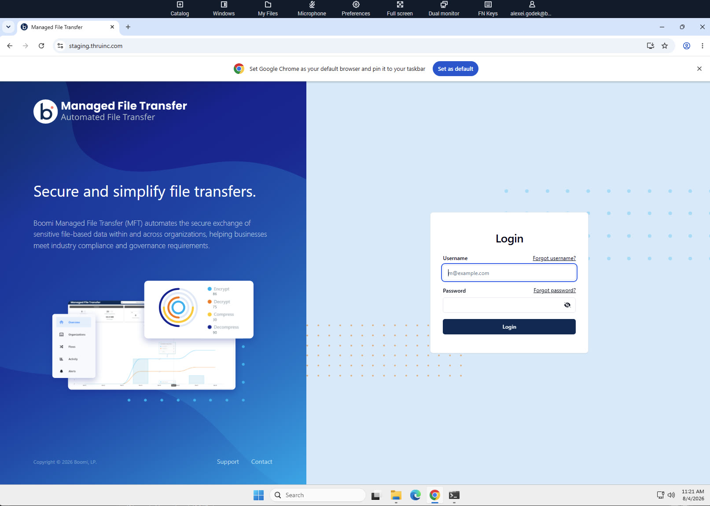
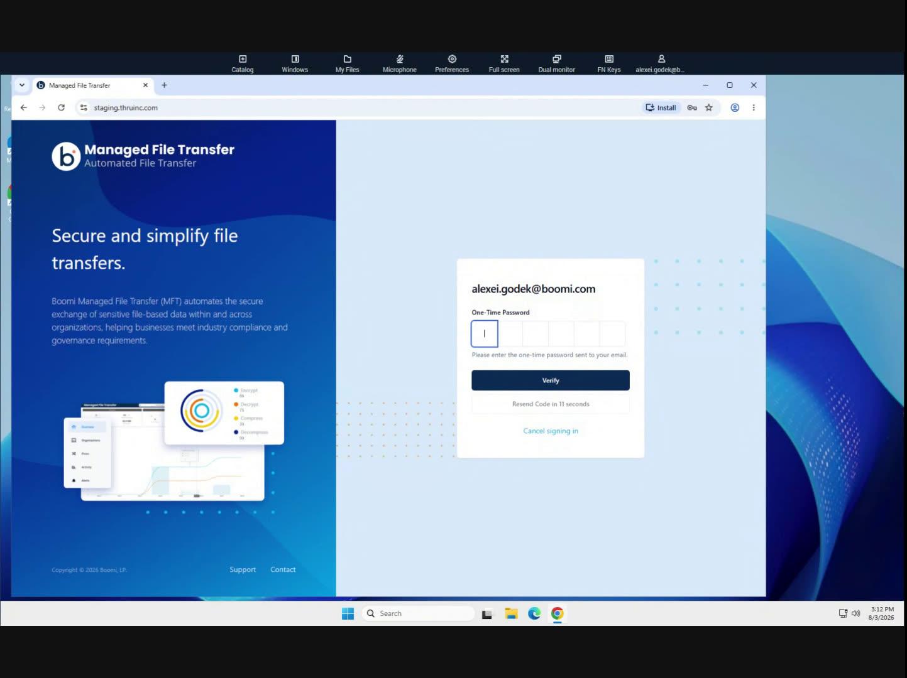
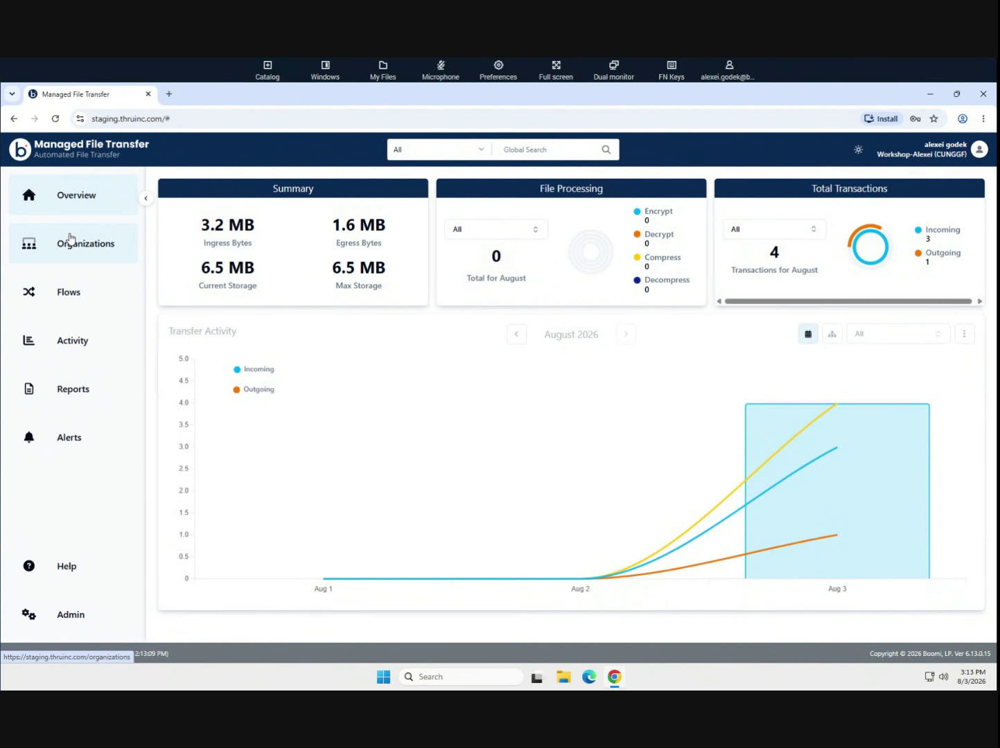

Log in to Boomi MFT
Standard login, done inside your WorkSpaces browser session.
⏰ ~5 minLaunch Chrome and navigate to the workshop landing page
Launch Chrome and go to:
boomi.to/nodeworkshop
That short link redirects here, to this same lab guide — so if you're reading this inside your WorkSpaces desktop, you're already in the right place. The Boomi MFT login link is https://staging.thruinc.com/, so you don't need to hunt for it or open anything from your email inside this virtual environment.
Open the Boomi MFT login page
Navigate to this link: https://staging.thruinc.com/ and log in — hopefully you've already set your password.

Enter your workshop username and password
Use the credentials provided to you for the workshop.

Complete the one-time passcode
Workshop accounts have MFA enabled, so you'll be sent a one-time password (OTP) to your email as a second verification step. Enter it and continue.

Confirm you're on the Overview dashboard
A successful login lands you on your organization's Overview page, showing transfer activity, storage, and summary stats.
